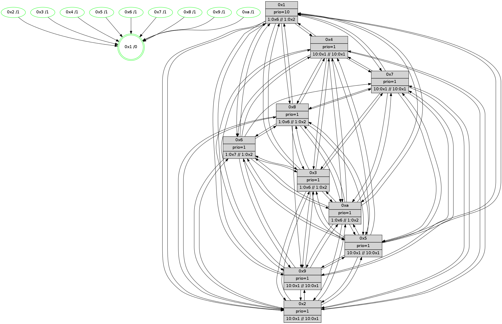

>> << IDX [start] -100 -25 -5 +0 +5 +25 +100 [600.196274042]
 Previous packets
----------------------------------------------------------------------
595.467485 beacon01(faad) #0 coord=01,02,03,04,05,06,07,0a,09,08 cycle=688.0ms assoc
-- color-indic=1 64 46 ae
595.477469 beacon02(faad) #0 coord=01,02,03,04,05,06,07,0a,09,08 cycle=688.0ms assoc 64 d5 9f
595.487467 beacon03(faad) #0 coord=01,02,03,04,05,06,07,0a,09,08 cycle=688.0ms assoc 64 af d2
595.497469 beacon04(faad) #0 coord=01,02,03,04,05,06,07,0a,09,08 cycle=688.0ms assoc 64 d8 38
595.507468 beacon05(faad) #0 coord=01,02,03,04,05,06,07,0a,09,08 cycle=688.0ms assoc 64 a2 75
595.517468 beacon06(faad) #0 coord=01,02,03,04,05,06,07,0a,09,08 cycle=688.0ms assoc 64 2c a2
595.527469 beacon07(faad) #0 coord=01,02,03,04,05,06,07,0a,09,08 cycle=688.0ms assoc 64 56 ef
595.537474 beacon0a(faad) #0 coord=01,02,03,04,05,06,07,0a,09,08 cycle=688.0ms assoc 64 27 e4
595.547473 beacon09(faad) #0 coord=01,02,03,04,05,06,07,0a,09,08 cycle=688.0ms assoc 64 a9 33
595.557474 beacon08(faad) #0 coord=01,02,03,04,05,06,07,0a,09,08 cycle=688.0ms assoc 64 d3 7e
595.569022 PARSE ERROR************************
Traceback (most recent call last):
File "PacketAnalysis.py", line 167, in showOperaPacket
structPacket = OperaPacketParse.parsePacket(rawPacket)
File "../../pkg-python/HipSens/Core/OperaPacketParse.py", line 461, in parsePacket
return parseHelloMessage(data)
File "../../pkg-python/HipSens/Core/OperaPacketParse.py", line 109, in parseHelloMessage
sysInfo,stability,colorInfo = struct.unpack("!HBB", linkList[0:4])
error: unpack requires a string argument of length 4
48 34 05 00 01 7f 00 02 02 12 07 00 06 00 04 00 03 00 01 00 09 00 08 00 0a 00 02 00 53 04 00 00 00 00 4c 12 31 5d 40 1f 3a 45 26 c3 06 40 3b 53 38 a2 4c d3 3b 89 53 09
595.572060 [Color(2) seq=40 @0:0 prio=1 >10.@1,1.@4,1.@6,1.@7 >>10.@1,1.@2,1.@3]
595.574115 [Color(1) seq=63 @0:0 prio=10 >1.@6,1.@7,1.@8,1.@9 >>1.@2,1.@3,1.@4]
595.579215 [Hello(4): seq=383 sym=5,7,6,2,3,9,8,10,1 sysInfo= stat=5:9,10,10,6/7:2,10,14,2/6:5,0,14,5/2:13,4,10,5/3:14,6,4,2/9:13,8,9,3/8:3,3,14,5/10:9,12,12,4/1:12,0,8,0]
595.581757 [Hello(3): seq=383 sym=1,7,6,2,4,8,9,10,5 sysInfo=coloring-mode-on,ColoringModeIndicationCalled stat=1:0,4,9,0/7:12,9,10,3/6:2,10,9,5/2:7,3,11,6/4:7,1,11,4/8:3,14,7,0/9:12,1,14,5/10:6,3,8,3/5:9,3,11,5]
595.584466 [Hello(10): seq=315 sym=6,2,3,8,9,5,7,4,1 sysInfo= stat=6:0,1,0,0/2:0,11,3,0/3:15,12,3,1/8:15,14,12,4/9:14,1,9,3/5:1,4,8,5/7:11,4,11,2/4:14,4,8,6/1:12,15,6,0]
595.589269 [Hello(8): seq=326 sym=5,2,3,4,7,6,9,10,1 sysInfo=coloring-mode-on,ColoringModeIndicationCalled stat=5:6,5,10,5/2:1,13,2,0/3:15,15,11,6/4:5,2,13,5/7:8,5,15,4/6:0,2,12,5/9:13,0,14,4/10:8,9,9,5/1:7,5,8,0]
595.592312 [Hello(9): seq=326 sym=5,2,3,4,7,6,10,1 sysInfo=hasWarning stat=5:5,6,9,6/2:9,3,14,4/3:7,6,9,4/4:9,2,11,4/7:14,6,15,2/6:5,12,12,4/10:2,7,11,5/1:8,15,8,0]
----------------------------------------------------------------------
596.255617 beacon01(faad) #0 coord=01,02,03,04,05,06,07,0a,09,08 cycle=688.0ms assoc
-- color-indic=1 64 82 a0
596.265599 beacon02(faad) #0 coord=01,02,03,04,05,06,07,0a,09,08 cycle=688.0ms assoc 64 11 91
596.275599 beacon03(faad) #0 coord=01,02,03,04,05,06,07,0a,09,08 cycle=688.0ms assoc 64 6b dc
596.285600 beacon04(faad) #0 coord=01,02,03,04,05,06,07,0a,09,08 cycle=688.0ms assoc 64 1c 36
596.295601 beacon05(faad) #0 coord=01,02,03,04,05,06,07,0a,09,08 cycle=688.0ms assoc 64 66 7b
596.305600 beacon06(faad) #0 coord=01,02,03,04,05,06,07,0a,09,08 cycle=688.0ms assoc 64 e8 ac
596.315600 beacon07(faad) #0 coord=01,02,03,04,05,06,07,0a,09,08 cycle=688.0ms assoc 64 92 e1
596.325604 beacon0a(faad) #0 coord=01,02,03,04,05,06,07,0a,09,08 cycle=688.0ms assoc 64 e3 ea
596.335605 beacon09(faad) #0 coord=01,02,03,04,05,06,07,0a,09,08 cycle=688.0ms assoc 64 6d 3d
596.345605 beacon08(faad) #0 coord=01,02,03,04,05,06,07,0a,09,08 cycle=688.0ms assoc 64 17 70
596.357461 [Hello(2): seq=380 sym=4,5,7,6,3,9,8,10,1 sysInfo=hasWarning stat=4:11,9,11,2/5:7,10,8,4/7:1,12,14,3/6:5,2,14,4/3:4,8,6,1/9:1,1,9,1/8:5,12,6,2/10:14,14,8,3/1:5,2,6,0]
596.360182 [Color(4) seq=38 @0:0 prio=1 >10.@1,1.@2,1.@3,1.@5 >>10.@1,1.@4,1.@6]
596.362093 [Color(8) seq=63 @0:0 prio=1 >1.@6,1.@7,1.@9,1.@a >>1.@2,1.@3,1.@4]
596.365093 [Color(10) seq=52 @0:0 prio=1 >1.@6,1.@7,1.@8,1.@9 >>1.@2,1.@3,1.@4]
596.369853 [Hello(6): seq=383 sym=2,3,5,4,7,9,8,10,1 sysInfo=coloring-mode-on,ColoringModeIndicationCalled stat=2:6,10,2,4/3:11,3,15,5/5:12,14,13,7/4:8,0,14,5/7:15,14,14,3/9:9,15,0,6/8:12,14,13,4/10:14,4,1,5/1:6,8,5,0]
596.372414 [Color(7) seq=51 @0:0 prio=1 >10.@1,1.@4,1.@6,1.@8 >>10.@1,1.@2,1.@3]
596.376715 [Color(5) seq=47 @0:0 prio=1 >10.@1,1.@4,1.@6,1.@7 >>10.@1,1.@2,1.@3]
596.385354 [Color(9) seq=47 @0:0 prio=1 >10.@1,1.@4,1.@6,1.@7 >>10.@1,1.@2,1.@3]
----------------------------------------------------------------------
597.043749 beacon01(faad) #0 coord=01,02,03,04,05,06,07,0a,09,08 cycle=688.0ms assoc
-- color-indic=1 64 3e a5
597.053732 beacon02(faad) #0 coord=01,02,03,04,05,06,07,0a,09,08 cycle=688.0ms assoc 64 ad 94
597.063732 beacon03(faad) #0 coord=01,02,03,04,05,06,07,0a,09,08 cycle=688.0ms assoc 64 d7 d9
597.073733 beacon04(faad) #0 coord=01,02,03,04,05,06,07,0a,09,08 cycle=688.0ms assoc 64 a0 33
597.083733 beacon05(faad) #0 coord=01,02,03,04,05,06,07,0a,09,08 cycle=688.0ms assoc 64 da 7e
597.093734 beacon06(faad) #0 coord=01,02,03,04,05,06,07,0a,09,08 cycle=688.0ms assoc 64 54 a9
597.103732 beacon07(faad) #0 coord=01,02,03,04,05,06,07,0a,09,08 cycle=688.0ms assoc 64 2e e4
597.113737 beacon0a(faad) #0 coord=01,02,03,04,05,06,07,0a,09,08 cycle=688.0ms assoc 64 5f ef
597.123737 beacon09(faad) #0 coord=01,02,03,04,05,06,07,0a,09,08 cycle=688.0ms assoc 64 d1 38
597.133737 beacon08(faad) #0 coord=01,02,03,04,05,06,07,0a,09,08 cycle=688.0ms assoc 64 ab 75
597.144962 [Hello(10): seq=316 sym=6,2,3,8,9,5,7,4,1 sysInfo= stat=6:1,2,0,0/2:0,11,3,0/3:15,12,3,1/8:0,14,12,4/9:15,2,9,3/5:1,5,8,5/7:12,5,11,2/4:14,4,8,6/1:13,15,6,0]
597.147454 [Hello(3): seq=384 sym=1,7,6,2,4,8,9,10,5 sysInfo=coloring-mode-on,ColoringModeIndicationCalled stat=1:1,4,10,0/7:12,10,10,3/6:2,11,9,5/2:7,3,11,6/4:7,1,11,4/8:4,14,7,0/9:13,2,14,5/10:7,3,8,3/5:9,4,11,5]
597.150659 [Hello(5): seq=384 sym=7,6,4,3,1,9,8,10,2 sysInfo= stat=7:13,5,1,3/6:15,1,0,4/4:6,4,10,3/3:4,12,6,2/1:0,5,6,0/9:4,6,11,3/8:3,10,8,3/10:4,13,12,4/2:10,9,11,3]
597.153091 [STC(3)->1 #0.36 tree-change,inconsistent-stability,stable,to-color d=1]
597.156732 [Hello(4): seq=384 sym=5,7,6,2,3,9,8,10,1 sysInfo= stat=5:9,11,10,6/7:3,11,14,2/6:6,1,14,5/2:14,4,10,5/3:15,6,4,2/9:14,9,9,3/8:4,4,14,5/10:10,13,12,4/1:12,0,8,0]
597.160252 [Hello(9): seq=327 sym=5,2,3,4,7,6,10,1 sysInfo=hasWarning stat=5:5,6,9,6/2:10,3,14,4/3:7,6,9,4/4:9,2,11,4/7:14,6,15,2/6:5,12,12,4/10:2,7,11,5/1:8,15,8,0]
597.163452 [Color(1) seq=64 @0:0 prio=10 >1.@6,1.@7,1.@8,1.@9 >>1.@2,1.@3,1.@4]
597.166306 [Hello(8): seq=327 sym=5,2,3,4,7,6,9,10,1 sysInfo=coloring-mode-on,ColoringModeIndicationCalled stat=5:6,6,10,5/2:2,13,2,0/3:15,15,11,6/4:5,2,13,5/7:9,6,15,4/6:1,3,12,5/9:14,1,14,4/10:8,10,9,5/1:7,5,8,0]
597.169088 [Color(2) seq=41 @0:0 prio=1 >10.@1,1.@4,1.@6,1.@7 >>10.@1,1.@2,1.@3]
----------------------------------------------------------------------
597.831882 beacon01(faad) #0 coord=01,02,03,04,05,06,07,0a,09,08 cycle=688.0ms assoc
-- color-indic=1 64 ea 90
597.841864 beacon02(faad) #0 coord=01,02,03,04,05,06,07,0a,09,08 cycle=688.0ms assoc 64 79 a1
597.851863 beacon03(faad) #0 coord=01,02,03,04,05,06,07,0a,09,08 cycle=688.0ms assoc 64 03 ec
597.861866 beacon04(faad) #0 coord=01,02,03,04,05,06,07,0a,09,08 cycle=688.0ms assoc 64 74 06
597.871864 beacon05(faad) #0 coord=01,02,03,04,05,06,07,0a,09,08 cycle=688.0ms assoc 64 0e 4b
597.881865 beacon06(faad) #0 coord=01,02,03,04,05,06,07,0a,09,08 cycle=688.0ms assoc 64 80 9c
597.891867 beacon07(faad) #0 coord=01,02,03,04,05,06,07,0a,09,08 cycle=688.0ms assoc 64 fa d1
597.901870 beacon0a(faad) #0 coord=01,02,03,04,05,06,07,0a,09,08 cycle=688.0ms assoc 64 8b da
597.911870 beacon09(faad) #0 coord=01,02,03,04,05,06,07,0a,09,08 cycle=688.0ms assoc 64 05 0d
597.921870 beacon08(faad) #0 coord=01,02,03,04,05,06,07,0a,09,08 cycle=688.0ms assoc 64 7f 40
597.933458 [Hello(1): seq=293 sym=4,2,9,5,10,3,8,6,7 sysInfo=coloring-mode-on,ColoringModeRequestCalled stat=4:0,10,1,6/2:15,6,0,6/9:13,14,5,6/5:8,4,1,7/10:6,9,2,5/3:15,15,7,8/8:3,10,6,5/6:8,6,4,4/7:0,13,6,7]
597.936187 [Color(8) seq=64 @0:0 prio=1 >1.@6,1.@7,1.@9,1.@a >>1.@2,1.@3,1.@4]
597.938092 [Color(3) seq=64 @0:0 prio=1 >1.@6,1.@7,1.@8,1.@9 >>1.@2,1.@3,1.@4]
597.940429 [Color(5) seq=48 @0:0 prio=1 >10.@1,1.@4,1.@6,1.@7 >>10.@1,1.@2,1.@3]
597.942451 [Hello(6): seq=384 sym=2,3,5,4,7,9,8,10,1 sysInfo=coloring-mode-on,ColoringModeIndicationCalled stat=2:7,11,2,4/3:12,3,15,5/5:13,15,13,7/4:9,0,14,5/7:15,14,14,3/9:10,0,0,6/8:13,14,13,4/10:15,4,1,5/1:6,9,5,0]
597.945227 [Color(10) seq=53 @0:0 prio=1 >1.@6,1.@7,1.@8,1.@9 >>1.@2,1.@3,1.@4]
597.947172 [Hello(7): seq=384 sym=2,3,5,4,8,9,10,1 sysInfo= stat=2:13,5,0,7/3:7,0,0,7/5:9,15,13,8/4:13,9,15,5/8:6,5,0,3/9:4,12,0,7/10:10,1,15,5/1:6,5,7,0]
597.950920 [Hello(2): seq=381 sym=4,5,7,6,3,9,8,10,1 sysInfo=hasWarning stat=4:11,10,11,2/5:7,11,8,4/7:2,13,14,3/6:6,3,14,4/3:4,8,6,1/9:1,2,9,1/8:5,13,6,2/10:15,15,8,3/1:5,2,6,0]
597.955277 [Color(9) seq=48 @0:0 prio=1 >10.@1,1.@4,1.@6,1.@7 >>10.@1,1.@2,1.@3]
597.959427 [Color(4) seq=39 @0:0 prio=1 >10.@1,1.@2,1.@3,1.@5 >>10.@1,1.@4,1.@6]
597.961322 [Color(7) seq=52 @0:0 prio=1 >10.@1,1.@4,1.@6,1.@8 >>10.@1,1.@2,1.@3]
----------------------------------------------------------------------
598.620013 beacon01(faad) #0 coord=01,02,03,04,05,06,07,0a,09,08 cycle=688.0ms assoc
-- color-indic=1 64 56 95
598.629996 beacon02(faad) #0 coord=01,02,03,04,05,06,07,0a,09,08 cycle=688.0ms assoc 64 c5 a4
598.639997 beacon03(faad) #0 coord=01,02,03,04,05,06,07,0a,09,08 cycle=688.0ms assoc 64 bf e9
598.649996 beacon04(faad) #0 coord=01,02,03,04,05,06,07,0a,09,08 cycle=688.0ms assoc 64 c8 03
598.659997 beacon05(faad) #0 coord=01,02,03,04,05,06,07,0a,09,08 cycle=688.0ms assoc 64 b2 4e
598.669997 beacon06(faad) #0 coord=01,02,03,04,05,06,07,0a,09,08 cycle=688.0ms assoc 64 3c 99
598.679998 beacon07(faad) #0 coord=01,02,03,04,05,06,07,0a,09,08 cycle=688.0ms assoc 64 46 d4
598.690001 beacon0a(faad) #0 coord=01,02,03,04,05,06,07,0a,09,08 cycle=688.0ms assoc 64 37 df
598.700000 beacon09(faad) #0 coord=01,02,03,04,05,06,07,0a,09,08 cycle=688.0ms assoc 64 b9 08
598.710002 beacon08(faad) #0 coord=01,02,03,04,05,06,07,0a,09,08 cycle=688.0ms assoc 64 c3 45
598.721859 [Hello(5): seq=385 sym=7,6,4,3,1,9,8,10,2 sysInfo= stat=7:13,5,1,3/6:0,2,0,4/4:7,5,10,3/3:4,12,7,2/1:1,6,6,0/9:5,7,11,3/8:4,10,8,3/10:4,14,12,4/2:11,10,11,3]
598.724591 [Color(1) seq=65 @0:0 prio=10 >1.@6,1.@7,1.@8,1.@9 >>1.@2,1.@3,1.@4]
598.729774 [Hello(8): seq=328 sym=5,2,3,4,7,6,9,10,1 sysInfo=coloring-mode-on,ColoringModeIndicationCalled stat=5:6,7,10,5/2:3,14,2,0/3:15,0,11,6/4:5,3,13,5/7:9,6,15,4/6:2,4,12,5/9:14,2,14,4/10:8,11,9,5/1:8,5,8,0]
598.732348 [Hello(3): seq=385 sym=1,7,6,2,4,8,9,10,5 sysInfo=coloring-mode-on,ColoringModeIndicationCalled stat=1:2,5,10,0/7:12,10,10,3/6:3,12,9,5/2:8,4,11,6/4:8,2,11,4/8:5,14,7,0/9:14,3,14,5/10:7,4,8,3/5:9,5,11,5]
598.738945 [Hello(4): seq=385 sym=5,7,6,2,3,9,8,10,1 sysInfo= stat=5:9,11,10,6/7:3,12,14,2/6:6,1,14,5/2:14,5,10,5/3:15,6,4,2/9:15,9,9,3/8:5,4,14,5/10:10,13,12,4/1:13,1,8,0]
598.748969 [Hello(10): seq=317 sym=6,2,3,8,9,5,7,4,1 sysInfo= stat=6:1,2,0,0/2:1,12,3,0/3:0,12,3,1/8:1,14,12,4/9:0,3,9,3/5:2,5,8,5/7:13,5,11,2/4:15,5,8,6/1:14,0,6,0]
----------------------------------------------------------------------
599.408144 beacon01(faad) #0 coord=01,02,03,04,05,06,07,0a,09,08 cycle=688.0ms assoc
-- color-indic=1 64 92 9b
599.418127 beacon02(faad) #0 coord=01,02,03,04,05,06,07,0a,09,08 cycle=688.0ms assoc 64 01 aa
599.428125 beacon03(faad) #0 coord=01,02,03,04,05,06,07,0a,09,08 cycle=688.0ms assoc 64 7b e7
599.438127 beacon04(faad) #0 coord=01,02,03,04,05,06,07,0a,09,08 cycle=688.0ms assoc 64 0c 0d
599.448127 beacon05(faad) #0 coord=01,02,03,04,05,06,07,0a,09,08 cycle=688.0ms assoc 64 76 40
599.458126 beacon06(faad) #0 coord=01,02,03,04,05,06,07,0a,09,08 cycle=688.0ms assoc 64 f8 97
599.468127 beacon07(faad) #0 coord=01,02,03,04,05,06,07,0a,09,08 cycle=688.0ms assoc 64 82 da
599.478130 beacon0a(faad) #0 coord=01,02,03,04,05,06,07,0a,09,08 cycle=688.0ms assoc 64 f3 d1
599.488132 beacon09(faad) #0 coord=01,02,03,04,05,06,07,0a,09,08 cycle=688.0ms assoc 64 7d 06
599.498133 beacon08(faad) #0 coord=01,02,03,04,05,06,07,0a,09,08 cycle=688.0ms assoc 64 07 4b
599.509387 [Hello(1): seq=294 sym=4,2,9,5,10,3,8,6,7 sysInfo=coloring-mode-on,ColoringModeRequestCalled stat=4:1,11,1,6/2:0,7,0,6/9:13,15,5,6/5:9,5,1,7/10:7,10,2,5/3:0,0,7,8/8:4,11,6,5/6:9,6,4,4/7:0,13,6,7]
599.512121 [Color(4) seq=40 @0:0 prio=1 >10.@1,1.@2,1.@3,1.@5 >>10.@1,1.@4,1.@6]
599.514615 [Hello(7): seq=385 sym=2,3,5,4,8,9,10,1 sysInfo= stat=2:13,6,0,7/3:8,0,0,7/5:10,15,13,8/4:14,9,15,5/8:7,5,0,3/9:4,12,0,7/10:11,1,15,5/1:7,6,7,0]
599.516993 [Hello(2): seq=382 sym=4,5,7,6,3,9,8,10,1 sysInfo=hasWarning stat=4:12,11,11,2/5:8,11,8,4/7:2,13,14,3/6:6,3,14,4/3:5,8,6,1/9:1,3,9,1/8:6,13,6,2/10:0,15,8,3/1:5,2,6,0]
599.519538 [Color(7) seq=53 @0:0 prio=1 >10.@1,1.@4,1.@6,1.@8 >>10.@1,1.@2,1.@3]
599.521464 [Color(10) seq=54 @0:0 prio=1 >1.@6,1.@7,1.@8,1.@9 >>1.@2,1.@3,1.@4]
599.528909 [Color(6) seq=65 @0:0 prio=1 >1.@7,1.@8,1.@9,1.@a >>1.@2,1.@3,1.@4]
599.530941 [Color(3) seq=65 @0:0 prio=1 >1.@6,1.@7,1.@8,1.@9 >>1.@2,1.@3,1.@4]
599.533335 [Color(8) seq=65 @0:0 prio=1 >1.@6,1.@7,1.@9,1.@a >>1.@2,1.@3,1.@4]
599.536691 [Color(5) seq=49 @0:0 prio=1 >10.@1,1.@4,1.@6,1.@7 >>10.@1,1.@2,1.@3]